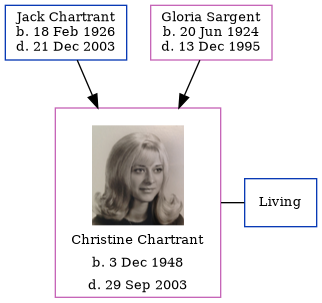

Christine Ann Howard (née Chartrant) 1948 - 2003
[ Home ] | [ Calendar ] | [ Surnames Index ] | [ Family History ]The daughter of Jack Chartrant and Gloria Sargent, Christine Chartrant, the sixth cousin on the mother's side of <a href="I1.html">Nigel Horne</a>, was born in Detroit, Wayne, Michigan, USA on Dec 3, 1948<span class="citation">1,2</span>. She was married to Howard.<p>She died on Sep 29, 2003 in Reno, Washoe, Nevada, USA<span class="citation">2</span>.
Parents
- Jack Edward was born on Feb 18, 1926
- Gloria B was born on Jun 20, 1924
Citations
- Social Security Death Index - Findmypast
- United States Obituary Notices - Findmypast
Media
Christine Ann Chartrant
Social Security Death Index - USBMD/SSDI/373529885
United States Obituary Notices - US/TRIB/042495977
Family Tree
Generated by Ged2Site. Last updated on Jul 20, 2025